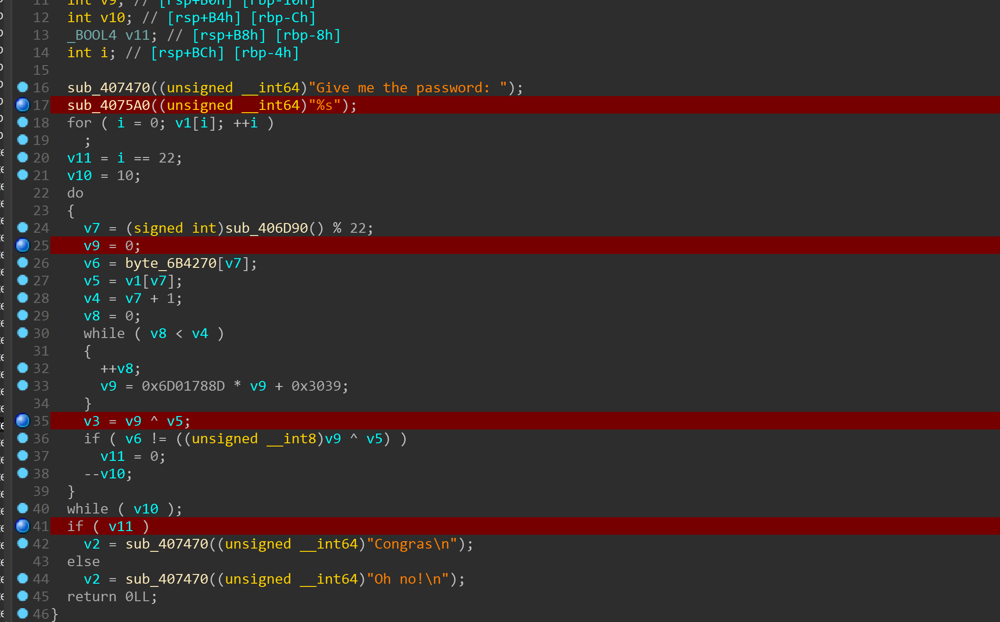
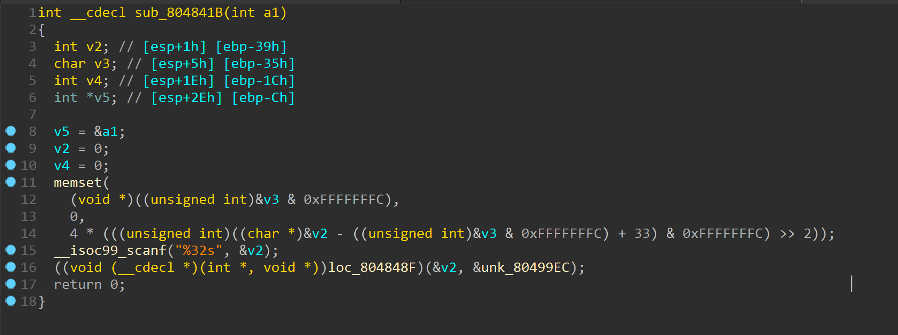
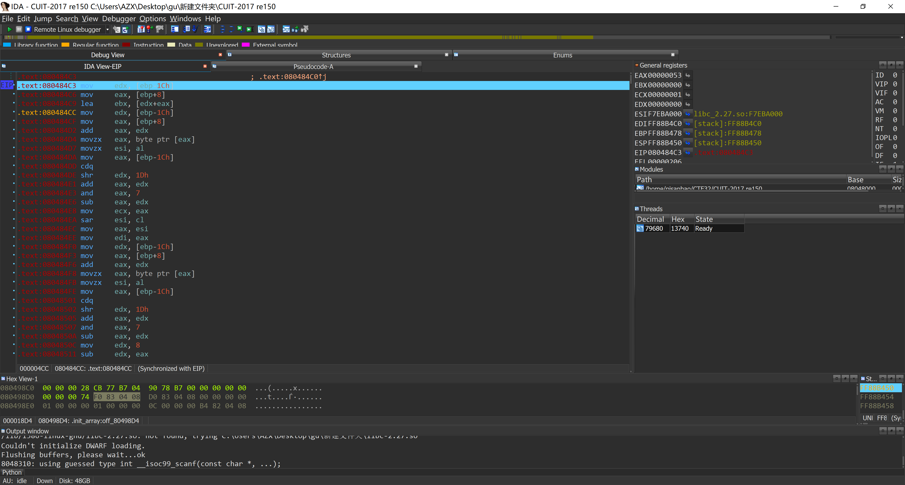
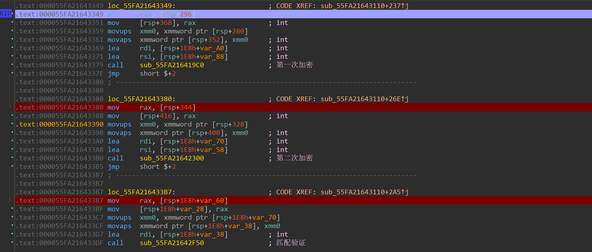
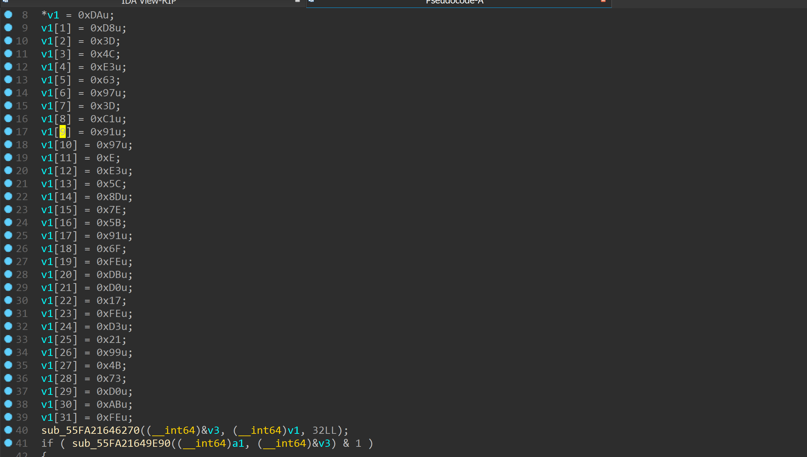

分享几道re
这几天一直打比赛忙不过来，偶尔抽出点时间写了几题
先上一道最水的吧
XCTF 3rd-GCTF-2017 hackme
这道题主逻辑其实特别简单

输入22个之判断部分，根据伪随机数来生成v9
然后用v9和输入的对应xor接着匹配
那就很简单了，下好断点记录下v9低8位的值就行
因为程序只验证部分就通过，所以只能解出部分。
但在提交的时候需要完整的flag
这不难，直接改了v7后记录v9
毕竟水题啊
1 | |
CUIT-2017 re150
稍微增加些难度
这是一道smc+花的题
smc的话就不能在修改处下断点，每次调试都要从头来
至于花。。。就不能反编译了啊//其实是因为我不怎么会去花
所以，不能反编译加不能下断点
有点小恶心
好在这题的加密部分不怎么难

疯狂跟函数可以发现主要函数位置
加密段有花。。。没办法

怼汇编吧。。。
下断点看值配合一点黑盒可以看出来
1 | |
XCTF 4th-QCTF-2018 babyre
这题写了我好久啊
最后才发现是rust写的。。。
感觉最近写的这种非c的逆向比较多啊。。。
对于这种类型题目的写法。。。说实话，只能怼汇编
配合黑盒上手
插件的话能用就用，但是用插件的前提是你认得出这是什么语言

首先是跟
找到关键函数
可以看到程序有俩次加密
在加密之前有一次移位操作
进第一次加密的时候就能发现了，按照某种顺序打乱字符串
第一次加密其实就是加法
第二次是移位后or

最后是匹配
可以看到匹配的数组
长度的话前面有一次验证，有个跳转，这边就不上了。
直接上代码吧
1 | |
花费大把时间怼出来一题还是蛮爽的。
分享几道re
http://www.psbazx.com/2019/04/26/分享几道re/